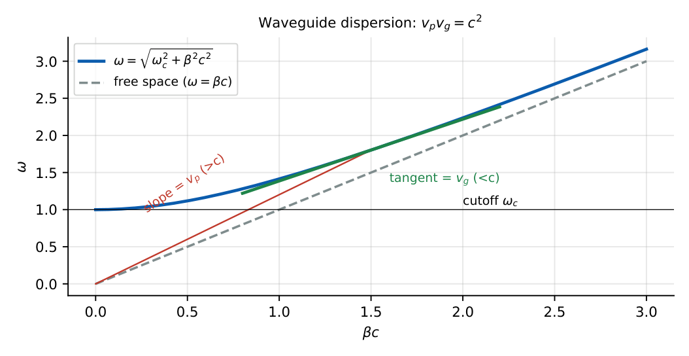

Waveguides and Optical Fibers
Cutoff frequencies of rectangular waveguide modes, which modes propagate at a given frequency, guide wavelength and velocities, circular-waveguide cutoffs, and the optical-fiber parameters NA, acceptance angle, \(V\)-number and number of modes.
8.1 Rectangular waveguide
A hollow metal tube of cross-section \(a\times b\) (\(a>b\)) guides waves that are TE\(_{mn}\) (no \(E_z\)) or TM\(_{mn}\) (no \(H_z\)). A hollow single-conductor guide cannot support TEM.
\(f_{c,mn}=\dfrac{c}{2}\sqrt{\left(\dfrac ma\right)^2+\left(\dfrac nb\right)^2}\) (air-filled; for a dielectric fill replace \(c\) by \(v=c/\sqrt{\eps_r}\)).
TE\(_{mn}\): \(m,n=0,1,2,\dots\) but not both zero. TM\(_{mn}\): \(m,n\ge1\). Dominant mode: TE\(_{10}\), \(f_c=\dfrac c{2a}\) (lowest cutoff, since \(a>b\)). Next modes: TE\(_{20}\) (\(c/a\)), TE\(_{01}\) (\(c/2b\)), TE\(_{11}\)/TM\(_{11}\).
For \(f>f_c\): \(\beta=\beta_0\sqrt{1-(f_c/f)^2}\), \(\ \lambda_g=\dfrac{\lambda_0}{\sqrt{1-(f_c/f)^2}}>\lambda_0\).
\(v_p=\dfrac{c}{\sqrt{1-(f_c/f)^2}}>c\), \(\ v_g=c\sqrt{1-(f_c/f)^2}<c\), \(\ v_pv_g=c^2\).
Wave impedance: \(Z_{TE}=\dfrac{\eta}{\sqrt{1-(f_c/f)^2}}\), \(\ Z_{TM}=\eta\sqrt{1-(f_c/f)^2}\). For \(f<f_c\) the field is evanescent (attenuated), no propagation.

WR-90 style guide \(a=2.286\,\)cm: \(f_{c,10}=\frac{3\times10^8}{2\times0.02286}=6.56\) GHz. For \(a=3\,\)cm, \(b=1.5\,\)cm: \(f_{c,10}=5\), \(f_{c,20}=10\), \(f_{c,01}=10\), \(f_{c,11}=11.18\) GHz; at \(9\,\)GHz only TE\(_{10}\) propagates. At \(f=10\,\)GHz with \(f_c=6.5\,\)GHz: \(\lambda_0=3\,\)cm, \(\lambda_g=\frac3{\sqrt{1-0.4225}}=3.95\,\)cm.
The single-mode band of a guide extends from \(f_{c,10}\) to the next cutoff (for \(a=2b\): up to \(2f_{c,10}\)). Power is carried by \(v_g\); attenuation is lowest well above cutoff and rises sharply as \(f\to f_c\).
8.2 Circular waveguide
Radius \(a\): \(f_c=\dfrac{c\,p}{2\pi a}\) with \(p=p'_{nm}\) (roots of \(J_n'\)) for TE\(_{nm}\) and \(p_{nm}\) (roots of \(J_n\)) for TM\(_{nm}\). Dominant mode TE\(_{11}\): \(p'_{11}=1.841\), \(f_c=\dfrac{1.841c}{2\pi a}=\dfrac{0.293c}{a}\). Next: TM\(_{01}\) (\(p_{01}=2.405\), \(f_c=0.383c/a\)), then TE\(_{21}\) (3.054), TE\(_{01}\) (3.832). TE\(_{01}\) has very low loss at high frequency (used in long-distance guides).
8.3 Optical fibers
A fibre has a core (index \(n_1\)) inside a cladding (\(n_2<n_1\)); light is guided by total internal reflection at the core–cladding boundary.
Critical angle at the core–cladding interface: \(\sin\theta_c=n_2/n_1\). Numerical aperture \(\mathrm{NA}=\sqrt{n_1^2-n_2^2}\approx n_1\sqrt{2\Delta}\), \(\Delta=\frac{n_1-n_2}{n_1}\). Acceptance angle (from air): \(\sin\theta_a=\mathrm{NA}\) (with \(n_0=1\)).
Normalised frequency \(V=\dfrac{2\pi a}{\lambda}\mathrm{NA}\). Single-mode operation: \(V<2.405\). Number of guided modes \(\approx V^2/2\) (step index), \(V^2/4\) (graded index).
Dispersion: modal (multimode, limits bit rate), chromatic (material + waveguide) and polarization-mode. Single-mode fibres are used for long-haul links; attenuation minimum near \(1550\,\)nm, zero-dispersion near \(1310\,\)nm in standard silica.
\(n_1=1.5\), \(n_2=1.47\): \(\mathrm{NA}=\sqrt{2.25-2.1609}=0.298\), acceptance angle \(17.4^\circ\), \(\theta_c=\sin^{-1}(0.98)=78.5^\circ\). With \(V=10\) about \(50\) modes propagate.
(i) The dominant mode of a rectangular guide is TE\(_{10}\), not TM\(_{11}\); TM modes need \(m,n\ge1\). (ii) \(f_c\) depends on the larger dimension \(a\) for TE\(_{10}\). (iii) \(v_p>c\) but \(v_g<c\). (iv) TE\(_{00}\) does not exist. (v) A fibre guides when \(n_1>n_2\) and the ray angle exceeds the critical angle; a larger NA means more light accepted.
List \(f_c\) for the first few \((m,n)\) and compare with \(f\). \(\lambda_g>\lambda_0\) always; \(\lambda_g=\lambda_0/\sqrt{1-(f_c/f)^2}\). For NA problems compute \(n_1^2-n_2^2\) first. If \(f=2f_c\), \(\lambda_g=1.155\lambda_0\).
8.4 GATE problems
Q1. The dominant mode of a rectangular waveguide (\(a>b\)) is (A) TM\(_{11}\) (B) TE\(_{10}\) (C) TE\(_{01}\) (D) TEM.
Q2. The cutoff frequency of TE\(_{10}\) for \(a=2.286\,\)cm is approximately (A) 3.3 GHz (B) 6.56 GHz (C) 13.1 GHz (D) 9.8 GHz.
Q3. Which mode cannot exist in a hollow rectangular waveguide? (A) TE\(_{10}\) (B) TM\(_{11}\) (C) TEM (D) TE\(_{11}\).
Q4. A fibre with \(n_1=1.5\), \(n_2=1.47\) has numerical aperture (A) 0.03 (B) 0.30 (C) 0.9 (D) 2.97.
Answers: Q1 (B). Q2 (B). Q3 (C). Q4 (B).
Q5. A guide with \(a=3\,\)cm, \(b=1.5\,\)cm operates at \(9\,\)GHz. The propagating mode(s) are (A) TE\(_{10}\) only (B) TE\(_{10}\) and TE\(_{20}\) (C) TE\(_{10}\), TE\(_{01}\) (D) none.
Q6. At \(10\,\)GHz in a guide with \(f_c=6.5\,\)GHz, \(\lambda_g\) is (A) 3.0 cm (B) 3.95 cm (C) 4.6 cm (D) 2.3 cm.
Q7. A mode has \(v_p=1.5c\). Its group velocity is (A) \(c/1.5\) (B) \(1.5c\) (C) \(c\) (D) \(0.5c\).
Answers: Q5 (A): \(f_{c,20}=f_{c,01}=10\) GHz \(>9\) GHz. Q6 (B). Q7 (A): \(c^2/1.5c\).
Q8. \(f_{c,10}\) (GHz) for \(a=4\,\)cm (air): .
Q9. NA (three decimals) for \(n_1=1.5\), \(n_2=1.47\): .
Q10. Number of modes (step index) for \(V=10\): .
Answers: Q8: \(\frac{3\times10^8}{0.08}=3.75\). Q9: \(0.298\). Q10: \(V^2/2=50\).
Q11. For a hollow rectangular waveguide above cutoff: (A) TE\(_{10}\) is dominant (B) \(v_p>c\) (C) \(v_g<c\) (D) TEM propagates.
Answers: Q11: (A), (B), (C).
T1. \(f_c\) of TE\(_{11}\) in a circular guide? T2. Single-mode condition of a fibre? T3. Impedance of a TM mode above cutoff vs \(\eta\)?
Answers: T1: \(1.841c/2\pi a\). T2: \(V<2.405\). T3: \(Z_{TM}<\eta\).
- \(f_{c,mn}=\frac c2\sqrt{(m/a)^2+(n/b)^2}\); TE\(_{10}\) dominant (\(c/2a\)); TM\(_{mn}\) needs \(m,n\ge1\); no TEM.
- \(\lambda_g=\lambda_0/\sqrt{1-(f_c/f)^2}\); \(v_pv_g=c^2\); \(Z_{TE}=\eta/\sqrt{\cdot}\).
- Circular: TE\(_{11}\) dominant, \(f_c=1.841c/2\pi a\); TM\(_{01}\) at \(2.405\).
- Fibre: \(\mathrm{NA}=\sqrt{n_1^2-n_2^2}\), \(\sin\theta_a=\mathrm{NA}\), \(V=\frac{2\pi a}\lambda\mathrm{NA}\), single-mode \(V<2.405\), modes \(\approx V^2/2\).